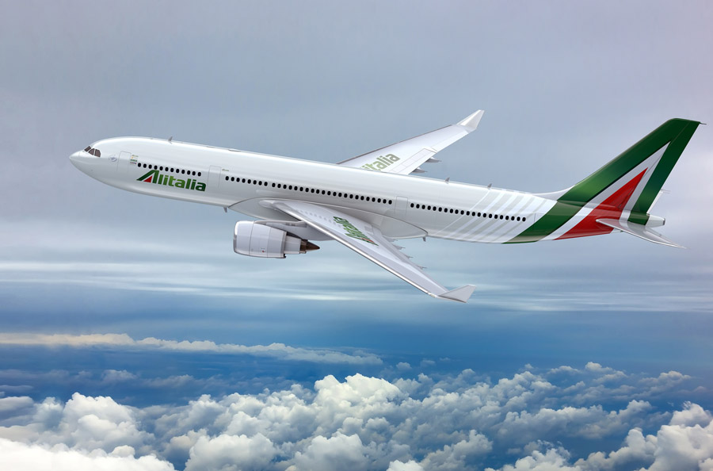
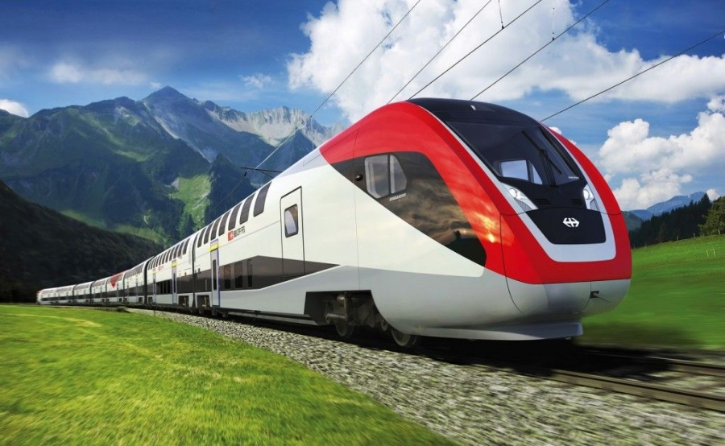
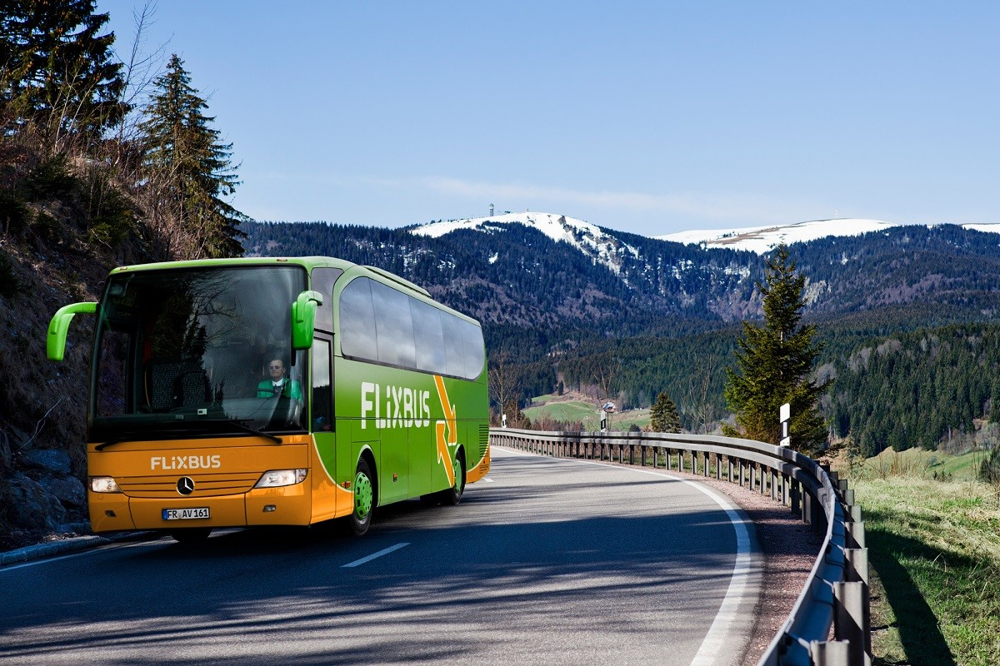

|  | Voos para Itália e Aeroportos Os aeroportos de Roma (Roma-Fiumicino) e de Milão (Milano-Malpensa) são os principais aeroportos na Itália. O aeroporto de Roma-Fiumicino serve a capital do país e grande parte do sul do país, enquanto o aeroporto de Milano-Malpensa é o aeroporto principal para o norte da Itália. Outros grandes aeroportos são os de Bergamo-Orio al Serio, especializado em voos de baixo custo, Veneza, Milano-Linate, Bolonha e Turim. Todos ficam no Vale do Pó. Na Toscana os aeroportos mais importantes são em Pisa e Florença. No sul da Itália os aeroportos mais movimentados são os de Nápoles e Palermo. Na Sardenha os dois aeroportos melhor servidos são os de Cagliari e Alghero. |
|  | Comboios para a Itália A rede ferroviária italiana está bem ligada com outros países europeus. A rede ferroviária italiana estende-se por 20.000 km. Existem duas linhas principais de alta velocidade no país: a linha norte-sul, que liga Milão, Bolonha, Florença, Roma e Nápoles e a linha oeste-leste, que liga Turim, Milão e Veneza. As principais estações ferroviárias italianas são as de Roma Termini, Milano Centrale, Torino Porta Nuova, Firenze Santa Maria Novella e Bolonha Centrale. |
|  | Autocarros para a Itália Transporte internacional: Na Itália há numerosas ligações rodoviárias para os outros países europeus. Transporte interno: Bons serviços de autocarro circulam entre as cidades e vilas e existem também bons serviços de autocarros locais. |